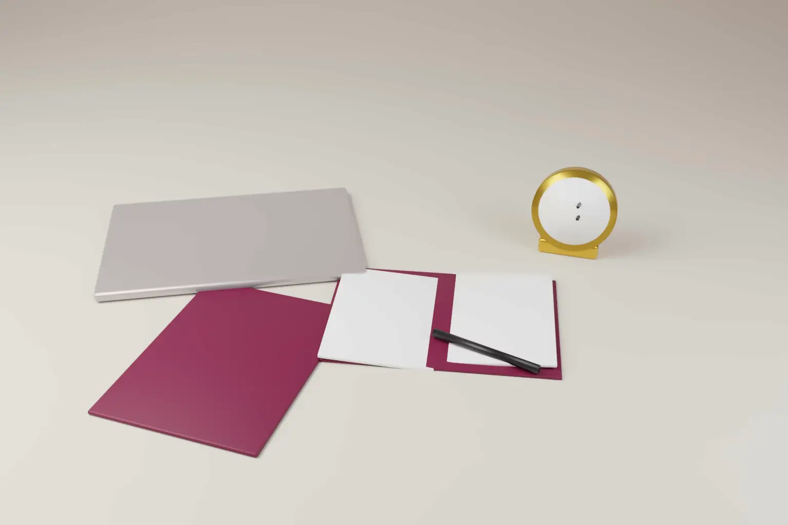

Invention records can decide whether a patent survives. On 19 October 2026 the US Court of Appeals for the Federal Circuit ruled on this. It held that Word metadata can corroborate an inventor's account of when he conceived an invention.
The case is Google LLC v Valtrus Innovations Ltd, No. 2024-1945. Google had challenged a Valtrus patent at the Patent Trial and Appeal Board. The Board upheld every claim. The Federal Circuit affirmed.
- The patent was US 6,728,704, on merging result lists from several search engines. It was filed on 27 August 2001.
- Google's main prior art, the Bushee patent, was filed on 24 July 2001. That is about five weeks earlier.
- Valtrus showed earlier conception and diligence up to filing. So Bushee was not prior art.
- The court accepted Word metadata as evidence independent of the inventor's own statements.
- A gap of about 11 business days before filing did not break the inventors' diligence.
Why the dates mattered
The patent was filed in 2001, under the old US first to invent rules. Under those rules, a patent owner could remove a reference by proving an earlier invention date. The owner had to show conception before the reference's date. It then had to show reasonable diligence up to filing.
Courts do not accept an inventor's word alone for this. The inventor's testimony must be corroborated by evidence from another source. The rule exists to guard against fraud and self interest. Unwitnessed notebooks and emails written by the inventor usually do not count as corroboration on their own.
What the court decided
Metadata as independent corroboration
Dr. Tsaparas, a co inventor, gave a declaration on the conception date. Valtrus also relied on the invention disclosure documents and their Microsoft Word metadata. The metadata recorded authorship and timestamps consistent with his account.
Judge Cunningham wrote for the panel. The court held that metadata generated automatically by software is not the inventor's own statement. If the file is authentic, the inventor did not write the timestamps. The court followed its 2025 decision in Global Health Solutions v Selner on this point.
Google had argued that corroboration needs a human witness. Its counsel accepted at the hearing that a human is not a required element. The court applied the rule of reason. It looked at all the evidence together to decide whether the inventor's story was credible.
Diligence over a short gap
Google attacked the period from 8 August to 27 August 2001. It called it a three week gap, or about 11 business days. The court disagreed.
Dr. Tsaparas was in Ontario. His signature had to travel to the law firm in California. An expert said that finalising a patent application usually takes several weeks. The court held that diligence need only be reasonably continuous, not perfect. Timestamp evidence covered the whole critical period.
Why it still matters after the AIA
The America Invents Act moved the US to a first inventor to file system. It applies to applications with an effective filing date on or after 16 March 2013. For those patents, an owner cannot remove prior art by proving an earlier invention date.
But many pre AIA patents are still in force or in litigation. Their owners can still rely on conception and diligence. Dates and records also still matter under the AIA in other ways.
- Derivation. A party may claim that another applicant derived the invention from it. Proof of who conceived what, and when, decides these disputes.
- Grace period. The US gives a one year grace period for the inventor's own disclosures. Dated records help show that a disclosure came from the inventor.
- Inventorship. Disputes over who is an inventor turn on who contributed to conception.
How India, Europe and the UK compare
- India. The Patents Act, 1970 follows a first to file system. An applicant cannot overcome prior art by proving an earlier invention date. Records still matter in other disputes. Under section 25(1)(a) and 25(2)(a), an opponent may argue that the applicant wrongfully obtained the invention from it. Section 6 limits who may apply. Under section 7(2), an assignee must file proof of the right to apply. Electronic records offered as evidence need a certificate under section 63 of the Bharatiya Sakshya Adhiniyam, 2023.
- European Patent Office. The European Patent Convention is first to file. Article 61 lets a person found entitled to an invention take over an application. Entitlement is decided by national courts, where records of conception are key evidence.
- United Kingdom. The Patents Act 1977 is also first to file. Sections 8 and 37 allow entitlement disputes before and after grant. Contemporaneous documents are often the deciding evidence in these cases.
So the specific rule in Valtrus, removing prior art by an earlier invention date, has no counterpart outside the US. The lesson about records applies everywhere. Clear, dated and authentic records help in ownership, inventorship and entitlement disputes in every system.
Practical steps for inventors and companies
- Keep invention disclosures in their native file formats. Do not convert them in ways that strip metadata.
- Store records on systems that keep version history and audit trails.
- Have a colleague read and sign key records, with the date. Independent witnesses still carry weight.
- Record who contributed which idea. This matters for inventorship and for ownership under employment agreements.
- Run a regular invention harvesting process. Capture ideas early, with dates, before they are shared outside the company.
- Move quickly from disclosure to filing. In first to file systems, a delay can cost the patent.
- For evidence in Indian proceedings, plan how you will certify electronic records.
Our patent services cover invention capture, drafting and filing. For US filing strategy, see our international patent support. Our step by step guide to filing a patent in India explains why early filing matters.
Frequently asked questions
Can file metadata prove the date of an invention?
In the US, the Federal Circuit has held that automatically generated metadata can corroborate an inventor's account of conception. The file must be authentic, and the court weighs all the evidence together.
Can I remove prior art by proving I invented first?
Only for US patents with an effective filing date before 16 March 2013. India, the EPO, the UK and US patents under the AIA follow first to file rules.
Why keep invention records in a first to file country?
Records decide disputes over inventorship, ownership and wrongful obtaining. They also help show that an early disclosure came from the inventor.